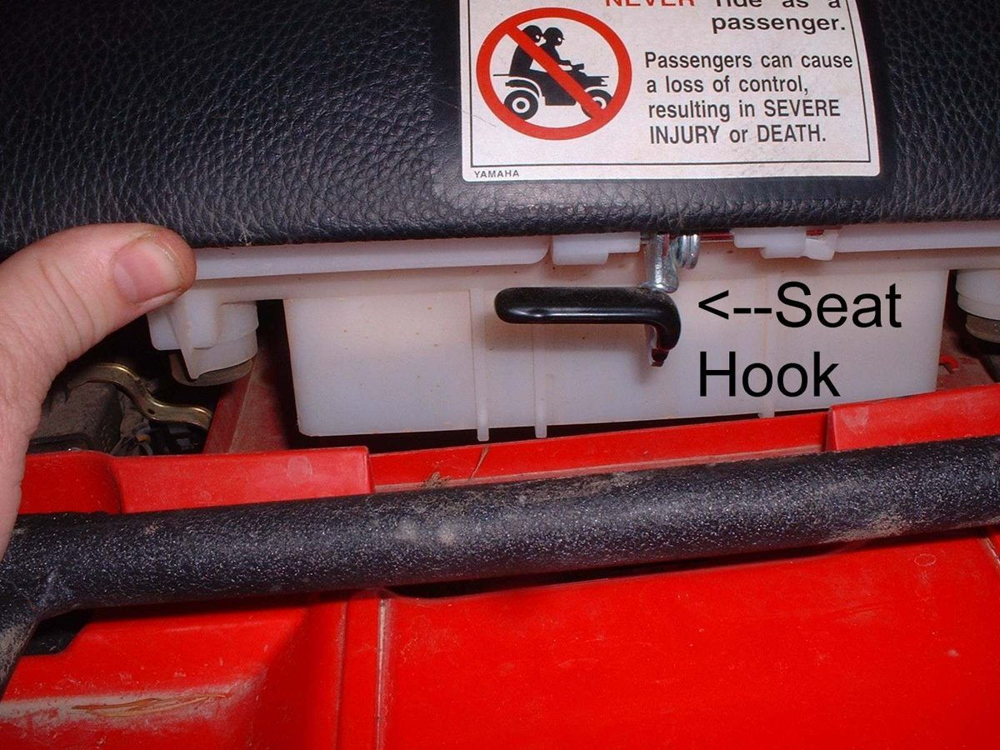
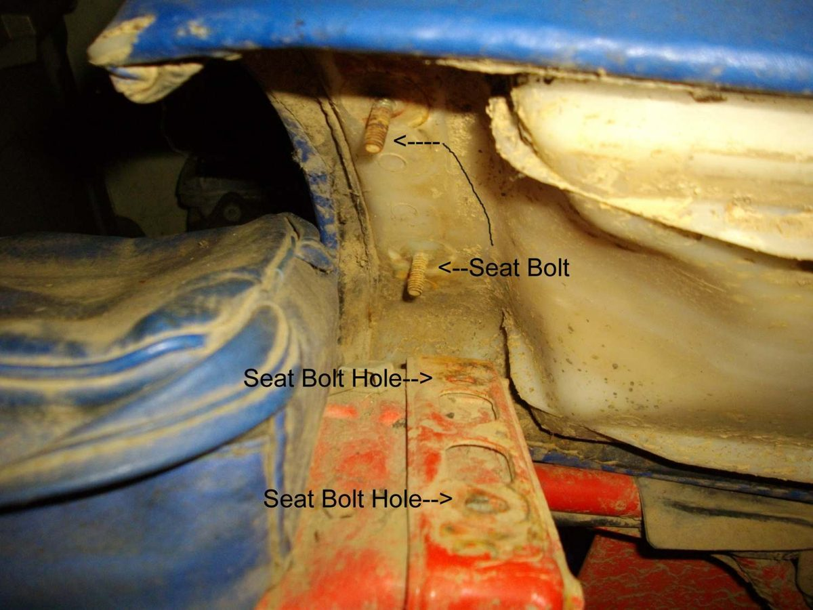
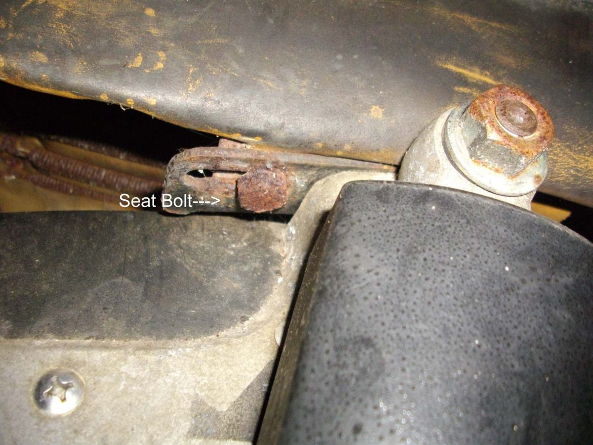
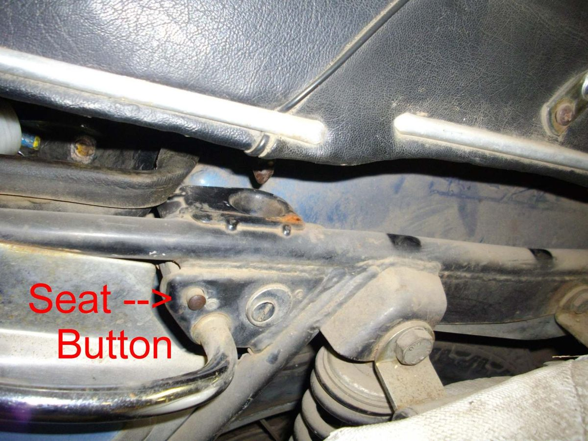
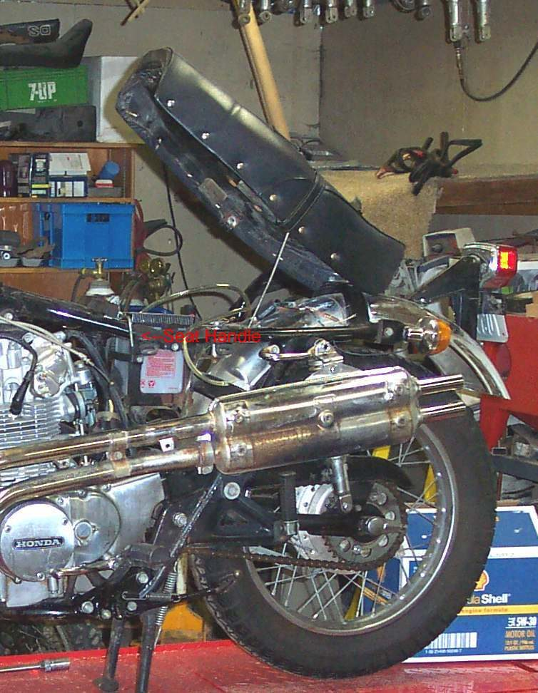

The seat moves when you sit on it or rattles over bumps, or the lock will not hold it closed, or will not open. Seats are held by bolts (the K-Light seat uses a rear bolt and two lower bolts), or by front hooks and a rear latch worked by the key, or by a hinge and latch on scooters. A seat that moves while riding upsets your control of the bike.
Is it safe to ride?
With care if the seat stays in place. If it lifts, slides or could come off, do not ride until it is fixed.
Quick checks first
- Is the seat held by bolts or by a latch?
- Push and pull the seat: which end moves?
- Look under the seat for missing rubber pads and broken hooks.
- Does the key turn the lock, and does the latch move?
- Seat fixings can be hidden: in the tool box, under the rear mudguard, behind side covers, or on a hinge bolt. See Remove the seat when you cannot find how.
- Where a rod or cable links both sides of the latch, check that both sides release. These parts stretch and break, and a spring can fail too.
Diagnose it step by step
1Is the seat held by bolts?
- Yes: go to step 2.
- No, a latch: go to step 3.
2Are the bolts tight and the rubbers in place?
- No: fit missing rubbers and tighten the bolts (K-Light 125: rear bolt M8 22 to 29 N·m, lower bolts M6 10 to 12 N·m). If a bolt will not tighten, the thread is stripped: workshop thread repair.
- Yes: look for a cracked seat base or bracket. Go to step 5.
3Remove the seat (key or cable release). Are the front hooks or tongue, and the rear latch pin, present and straight?
- No: fit a new hook or latch pin, or a new seat base if it is cracked.
- Yes: go to step 4.
4Does the latch close fully on the pin when you press the seat down?
- No: clean the latch, oil it lightly, and check the release cable is not too tight (it holds the latch open). Adjust or free the cable.
- Yes: the seat should be secure. Check the rubber pads under the seat; missing pads let it rattle (Find and fix rattles).
5Is there a crack in the seat base, the seat rail or the bracket on the frame?
- Seat base: replace the seat base or the seat.
- Frame rail or bracket: see Crack in the frame or a bracket.
6Will the seat not open at all?
- Check the release cable at the lock and the latch. Do not force the lock with tools; a locksmith or dealer can open it. Spray a little lock lubricant into the key slot.
Causes, most likely first
| Cause | How to confirm | Fix |
|---|---|---|
| Loose seat bolts | Bolts turn under torque | Tighten to value |
| Missing rubber pads | Seat rattles, gaps underneath | New pads |
| Dirty or misadjusted latch | Latch does not close fully | Clean, oil, adjust cable |
| Broken hook or seat base | Visible damage | New part or seat |
| Cracked frame rail | Crack at mount | Frame crack |
Reference values (K-Light 125)
| Item | Value | Source |
|---|---|---|
| Seat rear bolt M8 × 20 | 22 to 29 N·m | K-Light 125 manual, PDF pp. 179, 181 |
| Seat lower bolt M6 | 10 to 12 N·m | K-Light 125 manual, PDF pp. 179, 181 |